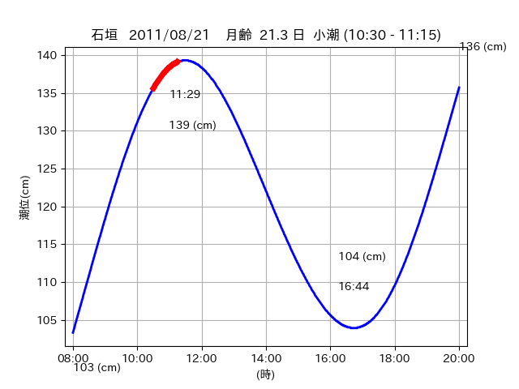
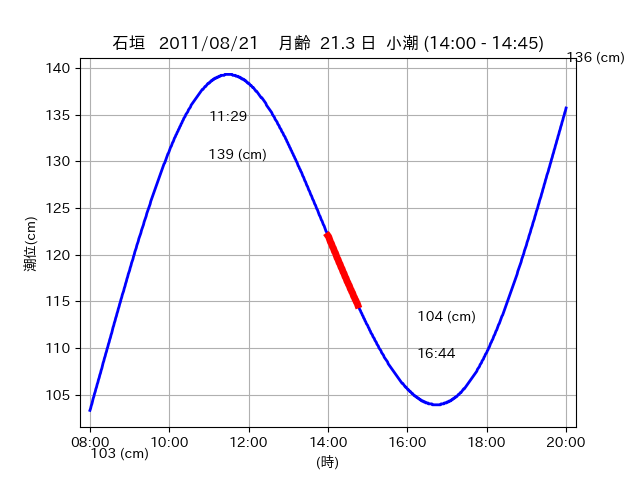
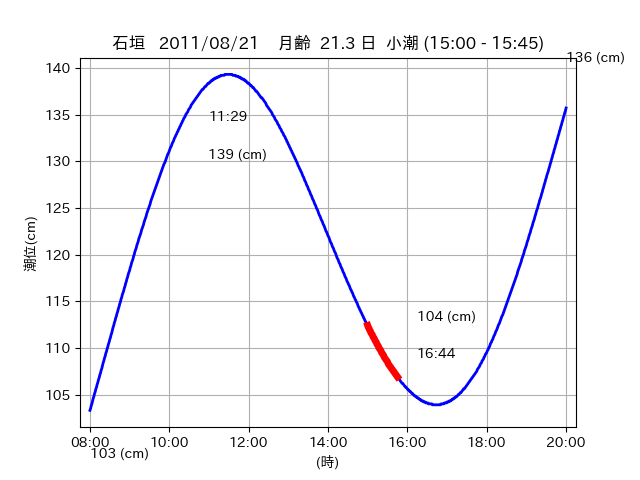

<!DOCTYPE html>
<html>
<head>
    
    <meta http-equiv="content-type" content="text/html; charset=UTF-8" />
    
        <script>
            L_NO_TOUCH = false;
            L_DISABLE_3D = false;
        </script>
    
    <style>html, body {width: 100%;height: 100%;margin: 0;padding: 0;}</style>
    <style>#map {position:absolute;top:0;bottom:0;right:0;left:0;}</style>
    <script src="https://cdn.jsdelivr.net/npm/leaflet@1.9.3/dist/leaflet.js"></script>
    <script src="https://code.jquery.com/jquery-3.7.1.min.js"></script>
    <script src="https://cdn.jsdelivr.net/npm/bootstrap@5.2.2/dist/js/bootstrap.bundle.min.js"></script>
    <script src="https://cdnjs.cloudflare.com/ajax/libs/Leaflet.awesome-markers/2.0.2/leaflet.awesome-markers.js"></script>
    <link rel="stylesheet" href="https://cdn.jsdelivr.net/npm/leaflet@1.9.3/dist/leaflet.css"/>
    <link rel="stylesheet" href="https://cdn.jsdelivr.net/npm/bootstrap@5.2.2/dist/css/bootstrap.min.css"/>
    <link rel="stylesheet" href="https://netdna.bootstrapcdn.com/bootstrap/3.0.0/css/bootstrap-glyphicons.css"/>
    <link rel="stylesheet" href="https://cdn.jsdelivr.net/npm/@fortawesome/fontawesome-free@6.2.0/css/all.min.css"/>
    <link rel="stylesheet" href="https://cdnjs.cloudflare.com/ajax/libs/Leaflet.awesome-markers/2.0.2/leaflet.awesome-markers.css"/>
    <link rel="stylesheet" href="https://cdn.jsdelivr.net/gh/python-visualization/folium/folium/templates/leaflet.awesome.rotate.min.css"/>
    
            <meta name="viewport" content="width=device-width,
                initial-scale=1.0, maximum-scale=1.0, user-scalable=no" />
            <style>
                #map_58f1794df207f2f6c6ab2d994cec9e38 {
                    position: relative;
                    width: 2048.0px;
                    height: 1600.0px;
                    left: 0.0%;
                    top: 0.0%;
                }
                .leaflet-container { font-size: 1rem; }
            </style>
        
</head>
<body>
    
    
            <div class="folium-map" id="map_58f1794df207f2f6c6ab2d994cec9e38" ></div>
        
</body>
<script>
    
    
            var map_58f1794df207f2f6c6ab2d994cec9e38 = L.map(
                "map_58f1794df207f2f6c6ab2d994cec9e38",
                {
                    center: [24.427, 123.854],
                    crs: L.CRS.EPSG3857,
                    ...{
  "zoom": 12,
  "zoomControl": true,
  "preferCanvas": false,
}

                }
            );

            

        
    
            var tile_layer_5d75fbaefac716297b6e79462bd09c41 = L.tileLayer(
                "https://cyberjapandata.gsi.go.jp/xyz/seamlessphoto/{z}/{x}/{y}.jpg",
                {
  "minZoom": 0,
  "maxZoom": 18,
  "maxNativeZoom": 18,
  "noWrap": false,
  "attribution": "\u5730\u7406\u9662\u5730\u56f3",
  "subdomains": "abc",
  "detectRetina": false,
  "tms": false,
  "opacity": 1,
}

            );
        
    
            tile_layer_5d75fbaefac716297b6e79462bd09c41.addTo(map_58f1794df207f2f6c6ab2d994cec9e38);
        
    
            var marker_5857013330a2409a6c3d4eb67fc5938a = L.marker(
                [24.4652, 123.84],
                {
}
            ).addTo(map_58f1794df207f2f6c6ab2d994cec9e38);
        
    
            var icon_eb806774a98d176aa93459a3a907773b = L.AwesomeMarkers.icon(
                {
  "markerColor": "orange",
  "iconColor": "white",
  "icon": "info-sign",
  "prefix": "glyphicon",
  "extraClasses": "fa-rotate-0",
}
            );
        
    
        var popup_c190d9209d8ca091778939ce6c8a80e5 = L.popup({
  "maxWidth": "100%",
});

        
            
                var html_823adb67ab95888759d849f2aeabe75e = $(`<div id="html_823adb67ab95888759d849f2aeabe75e" style="width: 100.0%; height: 100.0%;"><table><tr><td></td></tr><tr><td><center>20110821 No.1 </center></table></td></tr></table</div>`)[0];
                popup_c190d9209d8ca091778939ce6c8a80e5.setContent(html_823adb67ab95888759d849f2aeabe75e);
            
        

        marker_5857013330a2409a6c3d4eb67fc5938a.bindPopup(popup_c190d9209d8ca091778939ce6c8a80e5)
        ;

        
    
    
                marker_5857013330a2409a6c3d4eb67fc5938a.setIcon(icon_eb806774a98d176aa93459a3a907773b);
            
    
            var poly_line_2c4546d5dc0c5642af80914a6f63ce42 = L.polyline(
                [[24.4652, 123.84], [24.4698, 123.8376]],
                {"bubblingMouseEvents": true, "color": "#FF00FF", "dashArray": null, "dashOffset": null, "fill": false, "fillColor": "#FF00FF", "fillOpacity": 0.2, "fillRule": "evenodd", "lineCap": "round", "lineJoin": "round", "noClip": false, "opacity": 1.0, "smoothFactor": 1.0, "stroke": true, "weight": 3}
            ).addTo(map_58f1794df207f2f6c6ab2d994cec9e38);
        
    
            var marker_d3d9b9b3293527e949a82d292f8bc85c = L.marker(
                [24.4777, 123.8294],
                {
}
            ).addTo(map_58f1794df207f2f6c6ab2d994cec9e38);
        
    
            var icon_596f4921be958603b70042043f581e14 = L.AwesomeMarkers.icon(
                {
  "markerColor": "orange",
  "iconColor": "white",
  "icon": "info-sign",
  "prefix": "glyphicon",
  "extraClasses": "fa-rotate-0",
}
            );
        
    
        var popup_a5e5c88810714a0667c8504336794a15 = L.popup({
  "maxWidth": "100%",
});

        
            
                var html_6146a1e54ff8406a29ed271b6f057b05 = $(`<div id="html_6146a1e54ff8406a29ed271b6f057b05" style="width: 100.0%; height: 100.0%;"><table><tr><td></td></tr><tr><td><center>20110821 No.2 </center></table></td></tr></table</div>`)[0];
                popup_a5e5c88810714a0667c8504336794a15.setContent(html_6146a1e54ff8406a29ed271b6f057b05);
            
        

        marker_d3d9b9b3293527e949a82d292f8bc85c.bindPopup(popup_a5e5c88810714a0667c8504336794a15)
        ;

        
    
    
                marker_d3d9b9b3293527e949a82d292f8bc85c.setIcon(icon_596f4921be958603b70042043f581e14);
            
    
            var poly_line_b367d0439662a049d852d35346572923 = L.polyline(
                [[24.4777, 123.8294], [24.4777, 123.832]],
                {"bubblingMouseEvents": true, "color": "#00FFFF", "dashArray": null, "dashOffset": null, "fill": false, "fillColor": "#00FFFF", "fillOpacity": 0.2, "fillRule": "evenodd", "lineCap": "round", "lineJoin": "round", "noClip": false, "opacity": 1.0, "smoothFactor": 1.0, "stroke": true, "weight": 3}
            ).addTo(map_58f1794df207f2f6c6ab2d994cec9e38);
        
    
            var marker_d4a3b4d4a2bd141c08126cd36767edfb = L.marker(
                [24.4291, 123.8498],
                {
}
            ).addTo(map_58f1794df207f2f6c6ab2d994cec9e38);
        
    
            var icon_d960fda569cbb28d88499319413e46a3 = L.AwesomeMarkers.icon(
                {
  "markerColor": "orange",
  "iconColor": "white",
  "icon": "info-sign",
  "prefix": "glyphicon",
  "extraClasses": "fa-rotate-0",
}
            );
        
    
        var popup_521a4f9220fddfa674a2a7b966f98ceb = L.popup({
  "maxWidth": "100%",
});

        
            
                var html_e1f01c4a8aef1829444ca52849f3ea93 = $(`<div id="html_e1f01c4a8aef1829444ca52849f3ea93" style="width: 100.0%; height: 100.0%;"><table><tr><td></td></tr><tr><td><center>20110821 No.3 </center></table></td></tr></table</div>`)[0];
                popup_521a4f9220fddfa674a2a7b966f98ceb.setContent(html_e1f01c4a8aef1829444ca52849f3ea93);
            
        

        marker_d4a3b4d4a2bd141c08126cd36767edfb.bindPopup(popup_521a4f9220fddfa674a2a7b966f98ceb)
        ;

        
    
    
                marker_d4a3b4d4a2bd141c08126cd36767edfb.setIcon(icon_d960fda569cbb28d88499319413e46a3);
            
    
            var poly_line_e54318d709f545c68a8b47e515239bdf = L.polyline(
                [[24.4291, 123.8498], [24.4249, 123.8575]],
                {"bubblingMouseEvents": true, "color": "#00FFFF", "dashArray": null, "dashOffset": null, "fill": false, "fillColor": "#00FFFF", "fillOpacity": 0.2, "fillRule": "evenodd", "lineCap": "round", "lineJoin": "round", "noClip": false, "opacity": 1.0, "smoothFactor": 1.0, "stroke": true, "weight": 3}
            ).addTo(map_58f1794df207f2f6c6ab2d994cec9e38);
        
</script>
</html>